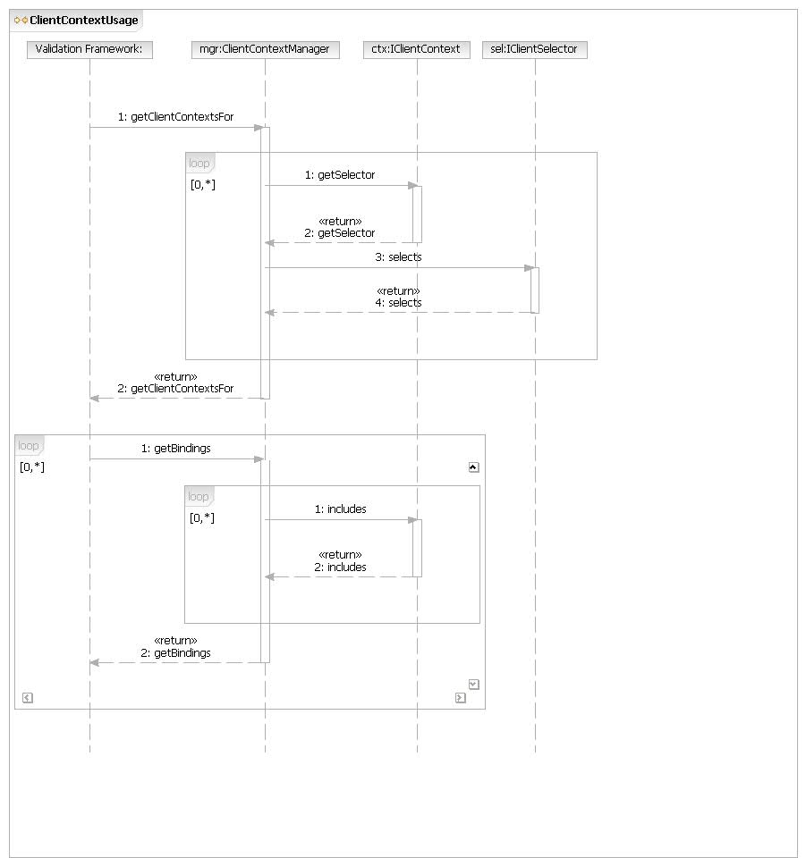
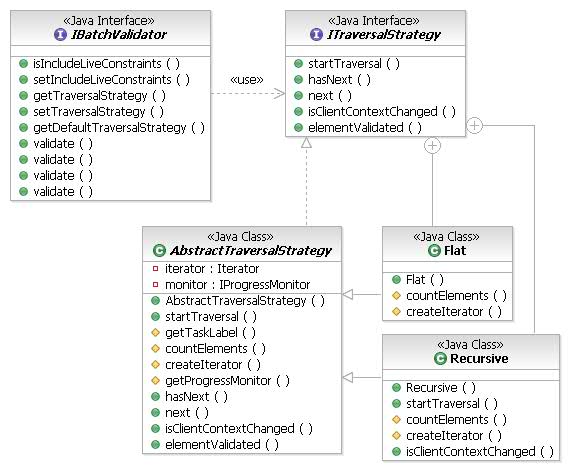

| Version: 0.3 | Date: 2005/02/28 |
This document describes the EMF validation framework's facility for clients to bind constraints to a "client context" that they define. This effictively allows applications to choose the constraints from the library of available constraints that they want to apply to the elements of their models.
Closely related to client contexts is the comcept of traversal strategy, which is a pluggable algorithm for traversing models. EMF's basic content-tree traversal is not suitable for all metamodels: sometimes non-containment relationships must be traversed to find more model content or branches of the content tree can be skipped entirely, and some clients may even provide end-user customization of the traversal.
Documents in ClearCase:
This feature is tracked by the following RFEs in ClearQuest:
This feature must satisfy the following requirements:
This feature is subject to the following design constraints:
This feature has the following limitations, which may be considered for future enhancements:
The concept of a "context" is modeled loosely after the Eclipse IContext API. This API is not used because it is defined in the org.eclipse.ui.contexts plug-in and because validation contexts do not need to be either dynamic or hierarchical.
Applications specify bindings in XML between a context that they declare and constraint IDs defined in the constraint library. In order to determine the contexts that are associated with a particular model element (as there may be multiple), a context declares an enablement expression (using the Eclipse standard expression language) that is satisfied for objects belonging to the context. Where this language is not sufficient, a selector class may be declared instead that "recognizes" objects that belong to the context. An enablement expression effictively implements an XML selector.
Backward compatibility is provided by the notion of a "default client context." A context defined by any plug-in may declare that it is a default context, which will be implicitly bound to those constraints that do not have any explicit context bindings in any client. Obviously, all constraints defined by 2nd- and 3rd-party clients of the platform in release 6 fall into this category.
The validation system protects itself against problems in the initialization and execution of client contexts and their selectors. Problems in the initialization of a client context (missing selector, invalid XML expression, invalid selector class) are logged with appropriate diagnostic information and result in the context not being defined.
When a context is successfully initialized, any CoreException thrown by the expressions API in evaluating an enablement expression or any run-time exception thrown by a custom selector implementation is logged and results in the context being removed from the system. Thus, all dependent constraint bindings cease to exist. It is anticipated that, in typical models, any such exceptions will occur repeatedly on similar elements or editing gestures and, therefore, the framework would expect to spend much time processing exceptions if it did not discard the context. Besides, these exceptions are usually indicative of programming errors.
In the interest of performance in batch validation of large models, it is desirable to infer as much as possible the contexts of an element from the elements previously traversed. Thus, the traversal strategy determines when the client context needs to be computed for an element, depending on the points in a traversal where it may likely enter another client domain.
Note: Live validation does not consider traversal of the model structure. It will compute the contexts applicable to each validated element, individually.
There are two extreme performance profiles to consider: at one extreme, a traversal assumes that client context is determined exclusively by a traversal root (i.e., one of the elements selected by the user in the UI). At the other extreme, the traversal strategy computes the contexts on every element that it encounters. The initial implementation of this feature for UML will apply the second approach and evaluate the resulting performance.
Client contexts are declared on the constraintBindings extension point:
<extension point="org.eclipse.emf.validation.constraintBindings">
<clientContext id="com.example.MyClient">
<enablement>
<and>
<instanceof value="org.eclipse.uml2.Element"/>
<test
property="com.ibm.xtools.emf.msl.objectType"
value="Modeling"/>
</and>
</enablement>
</clientContext>
</extension>
When the expression language is not effective in specifying the matching condition, a custom selector may be provided:
<extension point="org.eclipse.emf.validation.constraintBindings">
<clientContext id="com.example.MyClient">
<selector class="com.example.MyClientSelector"/>
</clientContext>
</extension>
with a particular selector implementation perhaps looking like:
public class MyClientSelector implements IClientSelector {
public boolean selects(Object object) {
boolean result = false;
if (object instanceof EObject) {
// it should be an EObject, but we'll be defensive
EObject eObject = (EObject) object;
Resource res = eObject.eResource();
if (res != null) {
result = isLibraryContentType(res);
}
}
return result;
}
private boolean isLibraryContentType(Resource res) {
// ... determine whether 'res' is an instance
// of the "library" schema
}
}
Client contexts can be bound to constraints, individually, or to constraint categories (to bind all of the constraints in the category). The latter option has the advantage of allowing new constraint contributions in a category to automatically be bound to the appropriate client context, even if the constraint is defined in a plug-in that is unaware of that context or its binding to the category. Category bindings are inherited by sub-categories from their ancestors.
Example of a binding for the UML specification's "Classifier generalizations are acyclic" constraint:
<extension point="org.eclipse.emf.validation.constraintBindings">
<binding
context="com.example.MyClient"
constraint="com.ibm.xtools.uml.validation.classifiers.genCycle"/>
</extension>
An alternative form that is slightly less cumbersome when binding multiple constraints to a context:
<extension point="org.eclipse.emf.validation.constraintBindings">
<binding context="com.example.MyClient">
<constraint ref="com.ibm.xtools.uml.validation.namespace.distinctMembers"/>
<constraint ref="com.ibm.xtools.uml.validation.classifiers.genCycle"/>
</binding>
</extension>
Example of a binding for all of the constraints defined in the "Classes" package of the UML specification, including the "Kernel", "Interfaces", "AssociationClasses", and other sub-packages:
<extension point="org.eclipse.emf.validation.constraintBindings">
<binding
context="com.example.MyClient"
category="uml2/spec/classes"/>
</extension>
The alternative form of category bindings looks like:
<extension point="org.eclipse.emf.validation.constraintBindings">
<binding context="com.example.MyClient">
<category ref="uml2/spec/classes/kernel/namespaces"/>
<category ref="uml2/spec/classes/kernel/classifiers"/>
</binding>
</extension>
Note that nested <constraint> and <category> elements can be freely intermixed.
Implementers of EMF-based metamodels are encouraged to provide a default traversal strategy for their metamodel, as they control its structure. Considerations for traversal include
TreeIterator. Some metamodels make
scant use of containment relationships, so it may not be very useful.Default traversal strategies are contributed on the traversal extension point. For example, a traversal extension for the org.eclipse.uml2 metamodel might look like:
<extension point="org.eclipse.emf.validation.traversal">
<traversalStrategy
namespaceUri="http://www.eclipse.org/uml2/1.0.0/UML"
class="com.example.UmlTraversalStrategy">
</traversalStrategy>
</extension>
A slightly more complex example might provide different strategies for Model or Package trees as for Profiles. The validation framework determines the appropriate traversal strategy from the root container of a traversal root, considering that root containers define a "kind" of model.
<extension point="org.eclipse.emf.validation.traversal">
<!-- The default strategy for non-profiles. -->
<traversalStrategy
namespaceUri="http://www.eclipse.org/uml2/1.0.0/UML"
class="com.example.DefaultUmlTraversalStrategy">
</traversalStrategy>
<!-- The strategy for profiles. -->
<traversalStrategy
namespaceUri="http://www.eclipse.org/uml2/1.0.0/UML"
class="com.example.ProfileUmlTraversalStrategy">
<eclass name="uml2.Profile"/>
</traversalStrategy>
</extension>
A simple traversal strategy for UML might skip over all EAnnotations, knowing that all of the EClasses in this metamodel ultimately extend the Ecore EModelElement metaclass. Note that this simple example doesn't handle cases where one traversal root is in the sub-tree of another, nor does it improve upon the inherited isClientContextChanged() implementation.
public class DefaultUmlTraversalStrategy
extends AbstractTraversalStrategy {
protected Iterator createIterator(
final Collection traversalRoots) {
return new Iterator() {
private TreeIterator delegate =
EcoreUtil.getAllContents(traversalRoots);
private Object next;
public boolean hasNext() {
while (next == null && delegate.hasNext()) {
next = delegate.next();
if (next instanceof EAnnotation) {
next = null;
delegate.prune();
}
}
return next != null;
}
public Object next() {
if (!hasNext()) {
return new NoSuchElementException();
}
Object result = next;
next = null;
return result;
}
public void remove() {
throw new UnsupportedOperationException();
}
};
}
protected int countElements(Collection traversalRoots) {
int result = 0;
Iterator iter = createIterator(traversalRoots);
while (iter.hasNext()) {
result++;
iter.next();
}
return result;
}
}
If the default traversal strategy registered on an extension point such as in the previous example isn't sufficient for a client application's needs, then it may override that default strategy when it performs a validation.
IProgressMonitor monitor = // ... get a progress monitor
Collection selectedElements = // ... elements to validate
IBatchValidator validator = (IBatchValidator)
ModelValidationService.getInstance().newValidator(
EvaluationMode.BATCH);
validator.setTraversalStrategy(new MyTraversalStrategy());
IStatus status = validator.validate(selectedElements, monitor);
// ... do something with the status
The main part of the client context API is depicted in the figure below.
The ClientContextManager is responsible for loading the client contexts and bindings from the constraintBindings extension point, and for filtering the constraints applicable to an object according to its client context.
The existing IModelConstraint interface is not changed by this feature.
The sequence diagram below shows how the framework uses the ClientContextManager to filter the constraints that it applies to an EObject. Note that, for performance considerations, the flow may not be exactly as indicated. This sequence is meant to show the interaction in concept only.
The steps are as follows:
EObject (as a traversal root).
The context manager iterates over the available contexts:EObject.true or false as appropriate.EObject.EObject's metaclass. The context manager iterates the constraints:
true or false as appropriate.EObject.
The relationships between the types in traversal strategy API is depected in the figure below.

The context binding and traversal strategy API and implementation are provided by the org.eclipse.emf.validation plug-in.
The constraintBindings extension point is a public API extension point in the org.eclipse.emf.validation namespace.
The traversal extension point is
a public API extension point in the org.eclipse.emf.validation
namespace.
public abstract boolean selects(Object object)object, returning true if such is the case, otherwise false. Anything about the input element can be used to make this determination, subject to only a few restrictions:
EObject, though it is prudent to check that such is the case. The signature of this method is Object primarily to assist the enablement expression support.This class is not intended to be used by clients of the validation framework; it does not constitute a part of the API.
This class is not intended to be used by clients of the validation framework; it does not constitute a part of the API.
public abstract void startTraversal(Collection traversalRoots,
IProgressMonitor monitor)public abstract boolean hasNext()true, then next() must return a valid EObject.public abstract EObject next()hasNext() is false, then the implementer should throw a java.lang.NoSuchElementException.startTraversal().
public abstract boolean isClientContextChanged()next() element in the traversal can possibly be in a different client context than the previous. This will usually occur when the traversal follows a non-containment relationship or bridges to another metamodel via an EAnnotation. When this method returns true, the framework will re-compute the current client context from the next element. Thus it is safe to always return true, but considerably less efficient.public abstract void elementValidated(EObject element,
IStatus status)next() method. This can be used by adaptive traversals to prune branches of the sequence or to otherwise alter their direction according to the status, and is recommended as an opportunity to update the progress monitor.A simple implementation of the traversal strategy which simply iterates the traversal roots and does not descend into their containment trees or follow any other kinds of reference.
A slightly less simple strategy than the Flat, which has the following characteristics:
A convenient superclass for custom traversal strategy implementations. In particular, it takes care of managing the progress monitor. Subclasses provide an Iterator to make elements available. Note that this class's implementation of the isClientContextChanged() method is pessimistic: it always returns true. Subclasses should consider overriding this to take advantage of the particular metamodel structure.
protected abstract int countElements(Collection
traversalRoots)startTraversal() method to determine the total amount of work for the progress monitor (one unit of work per element). A simple implementation might just count the number of elements returned by the iterator created by createIterator(), but there may be smarter ways. A subclass may even provide a different mapping of work units to elements, in which case the inherited implementation of elementValidated() should also be overridden.protected abstract Iterator createIterator(Collection
traversalRoots)Most of the methods of the IBatchValidator interface do not relate particularly to the traversal strategy API. The exceptions are described in this section.
public abstract void setTraversalStrategy(ITraversalStrategy
strategy)public abstract ITraversalStrategy getTraversalStrategy()setTraversalStrategy() method.public abstract ITraversalStrategy
getDefaultTraversalStrategy()ITraversalStrategy.Recursive.